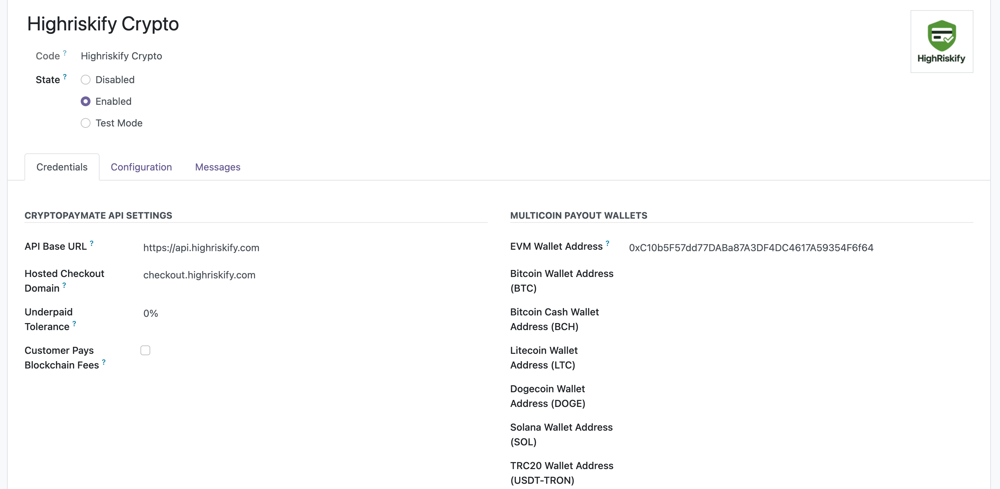

Need help with setup or support? Contact us at info@highriskify.com
HighRiskify Crypto connects Odoo eCommerce, invoices, quotations, and sales orders with a hosted crypto checkout workflow. Merchants configure their payout wallet addresses, customers receive the crypto amount, receiving address, and QR code, and Odoo records are synchronized after confirmed payment status updates.
01 Wallet-Based SetupAdd your payout wallet addresses in Odoo and enable the hosted crypto checkout provider. |
02 Hosted Crypto CheckoutCustomers are shown the crypto amount, receiving address, and QR code for easy payment. |
03 Odoo Status SyncPayment notifications update transactions, orders, quotations, and invoices where applicable. |
Instant Wallet-Based AccessConfigure your own wallet address inside Odoo and start using the hosted crypto checkout workflow. | Multicoin Crypto CheckoutAccept supported major cryptocurrencies and tokens through one hosted checkout integration. |
Unique Payment SessionsEach Odoo transaction receives its own payment/session reference for cleaner tracking and payment detection. | QR Code PaymentsCustomers can scan a QR code or copy the receiving address and exact crypto amount. |
Non-Custodial WorkflowMerchant payout wallets are configured in Odoo, with supported received funds forwarded according to the configured workflow. | Webhook / Callback SyncPayment status notifications synchronize Odoo transactions, orders, quotations, and invoices where applicable. |
Odoo Website & InvoicingBuilt for Odoo Website/eCommerce checkout and payment transaction synchronization workflows. | Flexible Backend SettingsConfigure API endpoint, hosted checkout domain, wallet addresses, branding, colors, and operational settings from Odoo. |
Supported assets and networks depend on the configured checkout setup, wallet configuration, customer location, provider availability, and network support. The module is designed for multicoin, multi-network crypto checkout routing where supported.
Major CoinsBitcoin BTC, Ethereum ETH, Solana SOL, Litecoin LTC, Dogecoin DOGE, Bitcoin Cash BCH, Avalanche AVAX, TRON TRX, BNB, and more. | StablecoinsUSDT, USDC, DAI, PYUSD, TUSD, USD1, EURC and other supported stablecoin routes where available. | NetworksBitcoin, Ethereum ERC-20, BNB Smart Chain BEP-20, TRON TRC-20, Solana, Arbitrum, Avalanche, Polygon, Base, Optimism, and more. |
HighRiskify Crypto is built for Odoo Crypto, Crypto Payments, Crypto Gateway, Crypto Checkout, Bitcoin Payments, Bitcoin Gateway, USDC Payments, USDT Payments, Stablecoin Payments, Stablecoin Gateway, Odoo Website, Odoo Ecommerce, Odoo Checkout, Odoo Payments, Odoo Payment Gateway, Odoo Website Payments, Odoo Ecommerce Payments, Odoo Online Store, Ecommerce Crypto, Website Crypto, Online Crypto Payments, Crypto Shopping Cart, Crypto Processor, Crypto Merchant, Payment Links, Hosted Checkout, QR Payments, Non Custodial, Self Custody, Wallet Connect, Wallet Payments, Crypto API, Payment API, Webhook, Crypto Invoices, Invoice Payments, Subscription Payments, Recurring Payments, Crypto Billing, Stablecoin Billing, Crypto payment link, Invoice email, Crypto, Payment Gateway, Website Payments, Ecommerce Payments, Subscription Payments, and Invoice Payments.
Brand and general search references include High riskify, Highriskify, HighRiskify, High Riskify, check out, and online payments.
Crypto and token references include: Bitcoin, BTC, Bitcoin Cash, BCH, Litecoin, LTC, Dogecoin, DOGE, Ethereum, ETH, Solana, SOL, Avalanche, AVAX, Tron, TRX, BNB Smart Chain, BEP-20, 1INCH, Cardano, ADA, BNB, Bitcoin BEP20, BTCB, PancakeSwap, CAKE, DAI, PHPt, Shiba Inu, SHIB, USD Coin, USDC, Tether, USDT, XRP, ERC-20, Arbitrum, ARB, Chainlink, LINK, Ondo Finance, ONDO, PEPE, Polygon, POL, Coinbase Wrapped Bitcoin, cbBTC, PayPal USD, PYUSD, World Liberty Financial USD, USD1, TrueUSD, TUSD, EURC, Wrapped Bitcoin, WBTC, Wrapped Ethereum, WETH, DASH.
Network references include: Bitcoin Network, Ethereum Network, BNB Smart Chain, BEP-20, ERC-20, TRC-20, Solana Network, Arbitrum Network, Avalanche Network, Polygon Network.
This crypto payment gateway may be discovered by merchants researching alternative payment methods, high-risk ecommerce payments, restricted merchant category payment options, stablecoin payments, website payments, ecommerce payments, subscription payments, and invoice payments for specialty commerce workflows.
Merchant category search terms include: CBD, Hemp Products, Vape Products, E-Cigarettes, Nicotine Products, Kratom, Supplements, Nutraceuticals, Telehealth, Peptides, Anti-Aging Clinics, Wellness Clinics, Medical Spas (Med Spas), Weight Loss Programs, GLP-1 Clinics, Testosterone Therapy (TRT), Hormone Replacement Therapy (HRT), Research Chemicals, Adult Products, Adult Content, Dating Services, Subscription Services, Membership Programs, Debt Relief, Credit Repair, Forex, Cryptocurrency, Crypto Exchanges, Crypto On-Ramps, Gambling, Sports Betting, Sweepstakes, Firearms Accessories, Ammunition, Precious Metals, Pawn Shops, Smoke Shops, Head Shops, Herbal Products, Alternative Health Products, Travel Clubs, Business Opportunities, Coaching Programs, Ticket Resellers, Multi-Level Marketing (MLM), Drop Shipping, International E-Commerce, Replica Products (usually prohibited), Digital Downloads, Software Licenses, IPTV Services, Debt Collection.
1. Install and Enable the ProviderInstall the module, update the Odoo Apps list, and activate HighRiskify Crypto from Payment Providers. |
2. Add Merchant Wallet AddressesConfigure payout wallets for the desired assets or networks, such as EVM, BTC, BCH, LTC, DOGE, Solana, or TRC20. |
3. Customer Chooses Crypto at CheckoutThe customer selects HighRiskify Crypto during Odoo checkout or invoice payment flow. |
4. QR Code and Address Are DisplayedThe customer receives the required crypto amount, receiving address, and QR code for easy sending. |
5. Payment Status Updates OdooAfter the payment is detected and confirmed, the callback/webhook workflow updates the related Odoo payment transaction and records. |
Configure HighRiskify Crypto settings directly within Odoo. Available options include API endpoint, hosted checkout domain, payout wallet addresses, payment display settings, branding elements, colors, and operational settings.

HighRiskify Crypto helps merchants connect Odoo with a hosted crypto checkout workflow while keeping payment status, transaction references, orders, quotations, and invoices synchronized inside Odoo.
This module connects Odoo with HighRiskify integration services to create hosted crypto checkout sessions, generate payment references, receive status notifications, and synchronize related Odoo records.
During normal operation, limited transaction and order-related information may be exchanged with HighRiskify services so the integration can initiate checkout, monitor payment status, process callback notifications, and update the corresponding Odoo records.
Data exchanged may include order references, invoice references, transaction amounts, currency, selected crypto/network, customer information where available, wallet/session identifiers, callback notifications, transaction identifiers, merchant website information, and system-generated timestamps.
Merchants are responsible for reviewing, configuring, and using the module in accordance with their own privacy, compliance, and operational requirements. Privacy Policy: https://highriskify.com/privacy-policy
Install the module, update the Odoo Apps list, activate HighRiskify Crypto from Payment Providers, add the required wallet addresses and checkout settings, then enable the provider for your Odoo website checkout or payment flow.
For setup help, configuration support, or bug reports, please contact HighRiskify support.